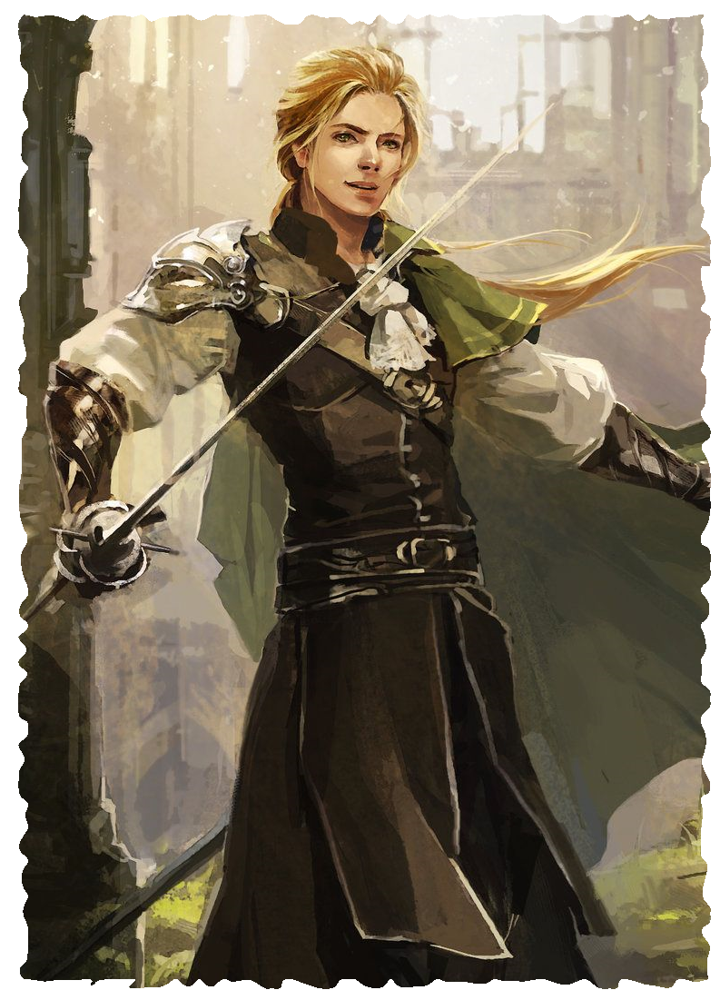

ROGUE
Rogues always have a trick up their sleeves. Using a combination of luck and skill, rogues can usually find solutions to their problems. Their talents come from their ingenuity, cunning, training, and, of course, good fortune, all of which makes them adaptable to any situation.
Although many rogues come from criminal backgrounds, not all rogues are criminals. Rogues include anyone who benefits from trickery and can fit into every aspect of society. While some work as pickpockets in crowded marketplaces and bandits preying on caravans, others act as detectives solving crimes, forward observers gathering information for their allies, or spies ferreting out dark plots.
LEVEL 1 ROGUE
Attributes Increase two by 1
Characteristics Health +3
Languages and Professions Add one Common, Criminal, or Wild Profession.
Nimble Recovery You can use an action to heal damage equal to your healing rate and then move up to half your Speed without triggering free attacks. Once you use this talent, you cannot use it again until after you complete a rest.
Trickery Once per round, you can make an attack roll or challenge roll with 1 boon. If you attack with 1 boon from this talent, your attack deals 1d6 extra damage.
LEVEL 2 ROGUE
Characteristics Health +3
Exploit Opportunity Once per round, when the total of your attack roll is 20 or higher and exceeds the target number by at least 5, you can take another turn at any point before the end of the round.
Roguery Talent Choose a roguery talent from the ones described below.
LEVEL 5 EXPERT ROGUE
Characteristics Health +3
Dirty Tricks Your attacks deal 1d6 extra damage when you make an attack roll with 1 boon.
Rogue Cunning You can use Trickery twice per round.
LEVEL 8 MASTER ROGUE
Characteristics Health +3
Roguery Talent Choose a roguery talent from the ones described below.
ROGUERY TALENTS
- Backstab Once per round, when you attack with a basic or swift weapon and you made the attack roll with at least 1 boon, the attack deals 1d6 extra damage. If you choose this talent a second time, the extra damage increases to 2d6.
- Magic Increase your Power by 1. Then make three choices. For each choice, you either discover a new spellcasting tradition or learn one spell from a tradition you have discovered. If you choose this talent a second time, increase your Power by 1 and discover a tradition or learn one spell.
- Riposte When a creature misses an attack against you and is left open, such as during a Parry, you can use a reaction to make an attack against that creature using a ready melee weapon. If you choose this talent a second time, all creatures dealt damage by this attack are left open (See Afflictions).
- Skirmish When you use an action to Retreat, you can make an attack. You make the attack roll with 1 bane, but the attack deals 1d6 extra damage. If you choose this talent a second time, you can move up to your Speed instead of half your Speed.
- Subterfuge You can use an action to make an Intellect attack roll against the Intellect of one creature within short range that can hear you and understand what you say. On a success, the target becomes charmed for 1 round or until it you attack it. On a failure, the target becomes immune to your Subterfuge until it completes a rest. If you choose this talent a second time, you make the attack roll with 1 boon and can affect a creature that doesn’t understand what you say.
- Threats You can use an action or a triggered action on your turn to make an Intellect attack roll against the Will of one target creature within short range of you that can hear and see you. On a success, the target becomes frightened for 1 round. On a failure, the target becomes immune to your Threats until it completes a rest. If you choose this talent again, your weapon attacks deal 1d6 extra damage to targets frightened in this way.